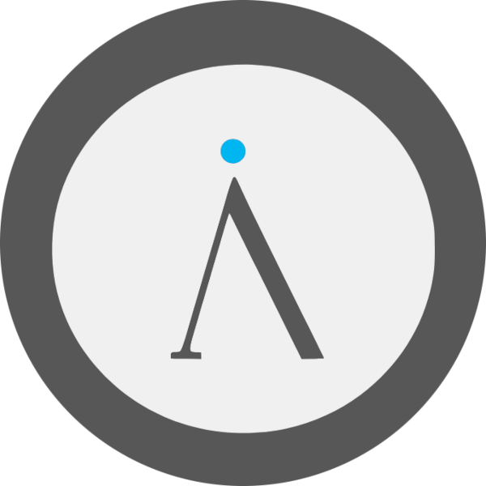

We believe security software like Kicksecure needs to remain Open Source and independent. Would you help sustain and grow the project? Learn more about our 14 year success story and maybe DONATE!
Malware
and Firmware
TrojansDocumentationOpen
Source HardwarePrevious
page: Malware and Firmware TrojansIndex page:
DocumentationNext page: Open Source
Hardware
Backdoor - Hidden Mechanism that allows Unauthorized Access
Hardware backdoors, vulnerabilities versus malicious backdoors, real-world examples like the XZ Utils and Copay wallet backdoors, and understand the threats posed by firmware and hardware trojans.
Vulnerability versus Malicious Backdoor
The word "backdoor" is not well defined. A vulnerability (or "bugdoor") can serve as a backdoor. Hence, many people use the terms vulnerability and backdoor as synonyms. This, however, confuses the boundaries between vulnerability and "malicious backdoors," for which a stronger word than just "backdoor" must now be used.
Innocent
Vulnerabilities vs Malicious Backdoors How to Manage Your
Risk 
Vulnerability Example
Bad (buffer overflow vulnerability):
char buf[10]; fgets(buf, sizeof(buf) - 1, stdin);Good example pseudo code (not vulnerable to buffer overflow):
char buf[10]; fgets(buf, sizeof(buf), stdin);Just a small code difference. Can be introduced by mistake, which happens a lot or intentionally.
Malicious Backdoor
Malicious Backdoor - Definition
Malicious backdoor pseudocode example:
# If the wallet balance is greater than 100, steal it.
if wallet_balance >= 100
send_to_hacker("1HackerBTCAddressHere", wallet_balance)
end
# Otherwise, do nothing.It's expressive. It's targeted. It's intentional. Direct evidence.
Analogy: Malicious backdoors are vulnerabilities on steroids.
Malicious Backdoor - Examples
Bitpay Wallet Malicious Backdoor
Bitpay Wallet at the time was called Copay Bitcoin Wallet. It had an interesting backdoor.
If more than 100 BTC, steal it. Otherwise, don't bother.
sources: [1]
xz malicious backdoor
- Puppet: xz Backdoor
- Akamai: Critical Linux Backdoor in xz-utils Discovered
- Technical Timeline and Analysis of the xz Backdoor
- Analysis on X (Twitter)
- SOC Prime: CVE-2024-3094 Multi-layer Supply Chain Attack
Summary:
- Source code repository (git) was not backdoored. Only the source tarball was backdoored.
- The source tarball was not build based on the source code (git) repository.
- The source tarball contained additional, malicious content.
- This is impossible to happen by mistake.
In 5.6.1, the threat actor introduced a code snippet aimed at enhancing the modularity of the backdoor. This modification enables the potential injection of different variants via test files in subsequent stages.XZ Utils Backdoor - Threat Actor Planned to Inject Further Vulnerabilities
In the cases of Copay and the xz malicious backdoor, we can be abundantly sure by looking at the code that it is inexcusable. This can be seen directly on the source code level. For both Copay and xz, there is no question and no doubt at all. Nobody is speculating about it, and no excuses have been made. The consensus is clear that these were intentional malicious backdoors. There's no question about it.
UnrealIRCd Malicious Backdoor
Miscellaneous Malicious Backdoors
Prerequisite knowledge:
- Blue Pill is a proof-of-concept malicious backdoor.
- CosmicStrand is a sophisticated UEFI firmware rootkit.
Illustrative hypothetical malicious backdoors:
- A hypothetical release of a Xen binary that included Blue Pill would be a very clear case of a malicious backdoor.
- A hypothetical computer motherboard coming with CosmicStrand installed by default would be a very clear case of a malicious backdoor.
- Purpose of these hypothetical examples:
Miscellaneous malicious backdoors:
- https://www.pcmag.com/news/thousands-of-android-devices-come-with-a-hidden-backdoor
- Can Google force-install compatible apps? This is not about whether Google does this. This is about whether Google can or could do this, i.e., whether it has the ability to do so.
Malicious Backdoor - Magnitude of Impact
Hypothetical malicious backdoors in cryptocurrency wallets:
To further explain the magnitude of how bad a malicious backdoor can be... https://safe.global is an Ethereum wallet used by institutions. Or hardware wallets such as https://enterprise.ledger.com are also used by institutions, which means not an individual but instead (big) companies such as cryptocurrency exchanges.
They're using such hardware/software to secure literally billions of dollars. In this case...
- Vulnerability: While these are interesting and may even cause losses for some people, in the big picture, not much is likely to happen. Probably nobody is going to lose money, and if so, only a few people. With a vulnerability, even if purposeful, the artistic freedom of the programmer is limited. The malware will have far fewer features and scope. Example: https://www.youtube.com/watch?v=Y1OBIGslgGM
- Malicious backdoor: Now, that's a much bigger problem. All users might lose all of their Ethereum at the same time.
Now anything is possible. All users of these cryptocurrency wallets could lose all of their Ethereum at the same time. The artistic freedom of the programmer is without restraints. They can insert a timer, a date when the theft shall happen. They can add their own Ethereum wallet addresses. Based on the timer, they can steal from all users at once. The malicious backdoor can, after completing its operation, even delete any evidence of itself by reverting back to a legitimate version. There is no further action required on their side once the malicious backdoor has been planted.
Actual past vulnerability in the electrum bitcoin wallet:
- electrum vulnerability: A popup which could be initiated by malicious servers instructed users to apply malicious instructions, i.e., phishing. If users don't react, nothing happens.
- electrum malicious backdoor: all users lose all their bitcoin at the same time.
The Perfect Malicious Backdoor
Let's start with simple, absolute language for laymen. We'll be more nuanced later.
Android makes it impossible to find backdoors.
This sounds extreme, but it reflects how things appear in practical terms. If a malicious backdoor is installed deep in the internal storage of an Android device, and the device is not rooted, then:
- You cannot see it.
- You cannot copy it.
- You cannot analyze it.
- You cannot remove it.
- You cannot prove it exists.
This is what makes the concept of a "perfect malicious backdoor" so dangerous.
Now, let's clarify the technical nuances.
More accurately, Android makes it very difficult, not literally impossible, to detect well-hidden malicious backdoors. Here's why:
- On modern Android devices, the internal storage is a small chip that is permanently attached (soldered) to the device's main circuit board. You can't just unplug it or hook it up to another computer like a USB drive.
- Android doesn't give you full access to that storage unless the device is "rooted", which means gaining full control over the system, like an administrator. (Administrative Rights Refusal (non-root enforcement))
- Most users can't root their devices. In many cases, manufacturers make it permanently impossible to do so.
- Without root, large parts of the system are completely hidden, even
if you use developer tools like
adb(Android Debug Bridge). - Even if you do manage to root the device, the rooting process itself changes the system. That change might accidentally erase clues. A clever backdoor could notice you've rooted the phone, then delete itself and hide all evidence.
- Android isn't Deep Scan Ready. Android is Deep Scan Restricted.
As explained in Basics of Malware Analysis and Backdoor Hunting, a proper investigation must start from a clean and trusted computer, not the infected device. You should never power on the compromised phone, because that might trigger the backdoor to erase itself or hide its tracks. Instead, experts need direct access to the device's raw data, ideally by physically removing the storage and using special tools to read it without running anything from it.
Unfortunately, Android's hardware design often blocks this kind of investigation. When you can't remove the storage chip or read it safely from the outside, the safest method, looking at the raw data without starting the system becomes impossible. That means any hidden malware, and all the evidence of it, stays completely out of reach.
In theory, someone might invent a way to read Android's storage fully and safely without turning the device on or running anything from it. That would make proper malware analysis possible. But realistically, this is extremely unlikely.
And if such a malicious backdoor were ever discovered and recovered, it wouldn't be truly "perfect" because real perfection means it could never be found under any circumstances. In the real world, nothing is perfect. But Android's design comes alarmingly close when it comes to enabling undetectable malicious implants on non-rooted, encrypted devices.
For a more technical write-up, see: Android Insecurity
related forum discussion: https://forums.kicksecure.com/t/no-rescue-mode/1171
Comparison of Vulnerabilities versus Malicious Backdoors
Criteria |
Vulnerability / "Bugdoor" |
Malicious Backdoor |
|---|---|---|
Intentional? |
No. Probably caused by programming mistakes or oversight in code, config, logic or architecture. Often accidental. (good) |
Yes. Always deliberately planted by someone with intent to exploit or gain unauthorized access. With certainty. (bad) |
Certainly intentional? |
No. (good) |
Yes. (bad) |
Potentially intentional? |
Yes. (bad) |
Yes. (bad) |
Targeted? For example, target 1 single user specifically only, such as, for example, a user with account name "John Doe" only? |
No, not targeted. Affects many systems. Exploited broadly without targeting specific victims. (good) |
Yes, often crafted for specific targets like cryptocurrency wallets or secure servers. (bad) |
Usually exploitable by general public? |
Yes, once discovered, any attacker can exploit it using common tools or techniques. (bad) |
No, typically only exploitable by the planter or someone with specific knowledge. (good) |
Usually exploitable by planter? |
No, there's no built-in mechanism for the original author to exploit it. (good) |
Yes, designed with hidden functionality for exploitation by the planter. (bad) |
Always exploitable? |
No, may require certain conditions or be patched once discovered. (good) |
Yes, built to be reliably exploitable under intended conditions. (bad) |
Clear evidence of malicious intent? |
No, often shows only bugs or crashes. Intent is hard to prove. (bad) |
Yes, code clearly performs harmful or unauthorized actions (e.g., data exfiltration). (good) [2] |
Room for speculation of the issue being a mistake, oversight, accidental? |
Yes, often shows only bugs or crashes. Intent is hard to prove. (bad) |
No. Intentional, malicious backdoor leaves undeniable evidence of intent. (good) [2] |
Obviously harmful examples? |
No, e.g., buffer overflow, memory leaks, misconfigured permissions. (good) |
Yes, e.g., Copay wallet (event-stream), XZ Utils, UnrealIRCd. (bad) |
Syntactically correct? |
No, may contain logic or syntax flaws leading to unintended behavior. (bad) |
Yes, generally clean, valid code that runs as intended but for bad purposes. (bad) |
Extremely difficult to detect? |
No, can be found via code review, scanning, or testing. (good) |
Yes, often concealed, making it hard to detect in audits or peer review. (bad) |
Guaranteed serious security risk? |
No, increases attack surface but doesn't ensure compromise. (good) |
Yes, provides persistent, secret, unauthorized access by design. (bad) |
Designed to bypass controls? |
No, weakness due to human error, not strategic sabotage. (good) |
Yes, a deliberate anti-feature to secretly bypass security mechanisms. (bad) |
Can be mitigated by sandboxing? |
Yes, sandboxing can sometimes prevent exploitation of some vulnerabilities (e.g., via seccomp restrictions). (good) |
No, sandboxing most likely cannot prevent backdoor exploitation. For sandboxing could not have stopped the Bitpay Wallet Malicious Backdoor. (bad) |
Can be mitigated by VMs? |
No, VMs typically don't render vulnerabilities such as buffer overflows non-exploitable. VMs help with isolation / compartmentalization. For example, a web server running inside a VM that gets exploited is still a compromised web server. (bad) |
No. For example, a web server that comes with a malicious backdoor by default is still a compromised web server., (bad) |
Must be found by the security community (white-hat)? |
Yes, typically discovered and disclosed by white-hats before they are widely exploited. (bad) |
Yes, but often intentionally hidden by the attacker to avoid white-hat detection. (bad) |
Already results in compromise? |
No, the system is only vulnerable, not actively compromised until exploited. (good) |
Yes, the presence of a backdoor implies a successful compromise has already occurred. (bad) |
Detectable? |
Yes, might be discovered through automated scans, bug bounty programs, or user reports. (good) |
Yes, but catching often requires manual inspection or deep auditing. (bad) |
Detection difficulty? |
Easier. (good) |
Harder. (bad) |
Likely to remain stealthy? |
No, many vulnerabilities cause crashes or unintended behavior that raise suspicion. (good) |
Yes, often designed to remain hidden during normal operations. (bad) |
Always instant full compromise and visibility? |
No, may require a chain of exploits or specific conditions for full control. (good) |
Yes, once triggered, typically grants full access or control immediately and silently. (bad) |
Detection Mechanism |
Often found via automated scanning, bug bounty programs, or user reports (e.g., static analysis tools). (good) |
Usually requires deep manual inspection, expert audits, or incident-driven exposure; often not caught by automation. (bad) |
Notification / Disclosure Type |
Typically disclosed in a responsible, coordinated manner with fix available beforehand. (good) |
Often chaotic (e.g., via social media, public issue threads); disclosure happens after real-world impact begins. (bad) |
Response Strategy (Remediation Options) |
Patch via upgrade, rollback to older version, or remove dependency. Fixes are typically available. (good) |
Rollback or removal may be the only option. Fixes are uncommon, especially if the attacker controls the latest version. (bad) |
Prevention / Proactive Measures |
Use lockfiles, automated upgrades (e.g., Renovate), version pinning, and frequent scanning. (good) |
Strict version pinning and manual upgrades. Avoid automated version adoption. Requires higher diligence. (bad) |
Origin of Discovery |
Frequently discovered through audits, community review, or bug bounty programs. (good) |
Often discovered incidentally, or after observed impact; not through systematic review. (bad) |
Time to Detection |
Can exist unnoticed for years. (bad) |
Can remain hidden for a long time, especially if stealthy. (bad) |
Typical Actor Involved |
Regular developer making an unintentional mistake. (good) |
Malicious actor posing as contributor or hijacking maintainer credentials. (bad) |
Post-Discovery Developer Response |
Maintainer typically issues fix and disclosure. (good) |
Maintainer may be the attacker or uncooperative; trust is compromised. (bad) |
Impact Scope |
Variable, depending on exposure and usage. (good) |
Often wide-reaching, catastrophic if successful. (bad) |
Chain Reactions / Supply Chain Risk |
Limited unless widely used across projects. (good) |
High, can propagate via transitive dependencies across ecosystems. (bad) |
Trust Recovery Post-Incident |
Reputation often recoverable with timely patch and transparency. (good) |
Trust usually irreparably damaged; may lead to project abandonment or fork. (bad) |
Hardware Backdoor
A hidden mechanism intentionally built into hardware that allows unauthorized access or control.
Hardware Trojan
A malicious modification of a hardware design that causes undesired behavior when triggered.
Firmware Trojan
A Trojan embedded in firmware (software on hardware) that manipulates hardware behavior or leaks data.
 Once a user is infected with very sophisticated malware that modifies
low-level firmware, it is extremely difficult to detect in almost all
cases.
Once a user is infected with very sophisticated malware that modifies
low-level firmware, it is extremely difficult to detect in almost all
cases.
Firmware infections should not be confused with hardware/circuit trojans, which are malicious modifications made to machine components during the manufacturing process. Despite their sophistication, circuit trojans are not immune to detection. [3]
Example Firmware Trojans
Hard Drive Firmware Trojan
Hard disk hacking by SpritesMods.com
- A 7-page blog post.
- Custom hack of HDD hardware
- A proof of concept demonstrating how to hack a hard drive (HDD) controller.
- It involves modifying how data is read and written. For example, injecting a username and password into /etc/passwd.
- This creates a persistent backdoor that survives OS reinstallation.
- It is similar to a BIOS backdoor, but implemented in HDD firmware.
- Only root access is required to install this hardware backdoor.
- What is the vulnerability? With root access, it is possible to modify HDD firmware. The hardware vendor is to blame for this.
- It is even possible to run Linux on the HDD controller firmware.
Virtualizers and Hardware Compromise
Virtualizers like Qubes, VirtualBox and KVM cannot absolutely prevent the compromise of hardware. Running all activities inside VMs is a very reasonable approach. However, this only raises the bar and makes it more difficult and/or expensive to compromise the whole system. It is by no means a perfect solution.
No distribution of Linux, BSD, Xen or any other variant can solve the issue of needing to dispose of potentially infected hardware. Hardware-specific issues can really only be fixed at the hardware level. At best, software interventions can only provide workarounds.
The Promise of Libre Firmware
The problem is no hardware exists that consists of entirely Libre firmware. It is very difficult to analyze the firmware of hardware, wipe potentially compromised versions, or overwrite firmware with a most-likely-clean version.
Even if a user wholly depended on Libre firmware, this would only make verification easier but it could not stop infection. Disassembling hardware components -- BIOS, disk controllers, CPU, Intel AMT and so on -- and flashing them with clean versions offline is extremely difficult. It is simply cheaper and more convenient to buy new hardware.
The bundling of undesirable anti-features like DRM in closed firmware is further evidence that Libre firmware is needed, in addition to Libre hardware designs.
A hypothetical stateless computer [4] [5] would solve the problem of malware persistence, but it still could not protect against the damage (data-exfiltration) caused by successful exploitation.
See also: Open Source Hardware
Circuit Trojan
A Trojan embedded at the circuit level, altering logic or functionality of the physical chip.
Finding Backdoors in Freedom Software vs Non-Freedom Software
Non-Freedom Software (precompiled binaries) should be avoided because it is easier to hide malicious backdoors. Freedom Software (source-available) should be preferred because it is more difficult to hide backdoors.
Non-Freedom Software (precompiled binaries) |
Freedom Software (source-available) |
|
|---|---|---|
Original source code is reviewable |
No |
Yes |
Compiled binary file can be decompiled into disassembly |
Yes |
Yes |
Regular pre-compiled binaries |
Depends [6] |
Yes |
Obfuscation (anti-disassembly, anti-debugging, anti-VM) [7] is usually not used |
Depends [8] |
Yes [9] |
Price for security audit searching for backdoors |
Very high [10] |
Lower |
Difference between precompiled version and self-compiled version |
Unavailable [11] |
Small or none [12] |
Reverse-engineering is not required |
No |
Yes |
Assembler language skills required |
Much more |
Less |
Always legal to decompile / reverse-engineer |
Yes [15] |
|
Possibility of catching backdoors via observing incoming/outgoing Internet connections |
Very difficult [16] |
Very difficult [16] |
Convenience of spotting backdoors |
Lowest convenience [17] |
Very high convenience [18] |
Difficulty of spotting intentional, malicious backdoors [19] [20] |
Much higher difficulty [21] |
Much lower difficulty [22] |
Difficulty of spotting a "bugdoor" [23] |
Much higher difficulty [24] |
Lower difficulty |
Third parties can legally release a software fork, a patched version without the backdoor |
No [25] |
Yes [26] |
Third parties can potentially make (possibly illegal) modifications like disabling serial key checks [27] |
Yes |
Yes |
Software is always modifiable |
No [28] |
Yes |
Third parties can use static code analysis tools |
No |
Yes |
Third parties can judge source code quality |
No |
Yes |
Third parties can find logic bugs in the source code |
No |
Yes |
Third parties can find logic bugs in the disassembly |
Yes |
Yes |
Benefits from population-scale scrutiny |
No |
Yes |
Third parties can benefit from debug symbols during analysis |
Depends [29] |
Yes |
Display source code intermixed with disassembly |
No |
Yes [30] |
Effort to audit subsequent releases |
Almost same [31] |
Usually lower [32] |
Forum discussion: Finding Backdoors in Freedom Software vs Non-Freedom Software |
||
Spotting backdoors is already very difficult in Freedom Software where the full source code is available to the general public. Spotting backdoors in non-freedom software composed of obfuscated binaries is exponentially more difficult. [33] [34] [35] [36] [37] [38] [39] [40] [41]
To further improve the situation in the future, the Freedom Software community is working on the Reproducible Builds project. Quote:
Reproducible builds are a set of software development practices that create an independently-verifiable path from source to binary code.
Whilst anyone may inspect the source code of free and open source software for malicious flaws, most software is distributed pre-compiled with no method to confirm whether they correspond.
This incentivises attacks on developers who release software, not only via traditional exploitation, but also in the forms of political influence, blackmail or even threats of violence.
This is particularly a concern for developers collaborating on privacy or security software: attacking these typically result in compromising particularly politically-sensitive targets such as dissidents, journalists and whistleblowers, as well as anyone wishing to communicate securely under a repressive regime.
Whilst individual developers are a natural target, it additionally encourages attacks on build infrastructure as an successful attack would provide access to a large number of downstream computer systems. By modifying the generated binaries here instead of modifying the upstream source code, illicit changes are essentially invisible to its original authors and users alike.
The motivation behind the Reproducible Builds project is therefore to allow verification that no vulnerabilities or backdoors have been introduced during this compilation process. By promising identical results are always generated from a given source, this allows multiple third parties to come to a consensus on a "correct" result, highlighting any deviations as suspect and worthy of scrutiny.
This ability to notice if a developer has been compromised then deters such threats or attacks occurring in the first place as any compromise would be quickly detected. This offers comfort to front-liners that they not only can be threatened, but they would not be coerced into exploiting or exposing their colleagues or end-users.
Several free software projects already, or will soon, provide reproducible builds.
Footnotes
- ↑ * https://www.synopsys.com/blogs/software-security/malicious-dependency-supply-chain/ * https://github.com/dominictarr/event-stream/issues/116 * https://github.com/dominictarr/event-stream/issues/116#issuecomment-441759047
- ↑ 1 2 Having clear evidence and no room for speculation is considered good.
- ↑ https://en.wikipedia.org/wiki/Hardware_Trojan#Detection
- ↑ https://blog.invisiblethings.org/2015/12/23/state_harmful.html
- ↑ https://github.com/rootkovska/state_harmful/blob/master/state_harmful.md
- ↑ Some use binary obfuscators.
- ↑ https://resources.infosecinstitute.com/topic/anti-disassembly-anti-debugging-and-anti-vm/
- ↑ Some use obfuscation.
- ↑ An Open Source application binary could be obfuscated in theory. However, depending on the application and the context -- like not being an Open Source obfuscator -- that would be highly suspicious. An Open Source application using obfuscators would probably be criticized in public, get scrutinized, and lose user trust.
- ↑ This is because non-freedom software is usually only available as a pre-compiled, possibly obfuscated binary. Using an anti-decompiler: * Auditors can only look at the disassembly and cannot compare a pre-compiled version from the software vendor with a self-compiled version from source code. * There is no source code that is well-written, well-commented, and easily readable by design.
- ↑ Since there is no source code, one cannot self-build one's own binary.
- ↑ * small: for non-reproducible builds (or reproducible builds with bugs) * none: for reproducible builds
- ↑ Decompilation is often expressly forbidden by license agreements of proprietary software.
- ↑ Skype used DMCA (Digital Millenium Copyright Act) to shut down reverse engineering of Skype
- ↑ Decompilation is always legal and permitted in the license agreements of Freedom Software.
- ↑ 1 2 This is very difficult because most outgoing connections are encrypted by default. At some point the content must be available to the computer in an unencrypted (plain text) format, but accessing that is not trivial. When running a suspected malicious application, local traffic analyzers like Wireshark cannot be trusted. The reason is the malicious application might have compromised the host operating system and be hiding that information from the traffic analyzer or through a backdoor. One possible option might be running the application inside a virtual machine, but many malicious applications actively attempt to detect this configuration. If a virtual machine is identified, they avoid performing malicious activities to avoid being detected. Ultimately this might be possible, but it is still very difficult.
- ↑ It is necessary to decompile the binary and read "gibberish", or try to catch malicious traffic originating from the software under review. As an example, consider how few people would have decompiled Microsoft Office and kept doing that for every upgrade.
- ↑ It is possible to: # Audit the source code and confirm it is free of backdoors. # Compare the precompiled binary with a self-built binary and audit the difference. Ideally, and in future, there will be no difference (thanks to the Reproducible Builds project) or only a small difference (due to non-determinism introduced during compilation, such as timestamps).
- ↑ An example of a malicious backdoor is a hardcoded username and password or login key only known by the software vendor. In this circumstance there is no plausible deniability for the software vendor.
- ↑ List of malicious backdoors in wikipedia.
- ↑ Requires strong disassembly auditing skills.
- ↑ If for example hardcoded login credentials were in the published source code, that would be easy to spot. If the published source code is different from the actual source code used by the developer to compile the binary, that difference would stand out when comparing pre-compiled binaries from the software vendor with self-compiled binaries by an auditor.
- ↑ A "bugdoor" is a vulnerability that can be abused to gain unauthorized access. It also provides plausible deniability for the software vendor. See also: Obfuscated C Code Contest.
- ↑ Such issues are hard to spot in the source code, but even harder to spot in the disassembly.
- ↑ This is forbidden in the license agreement. Due to lack of source code, no serious development is possible.
- ↑ Since source code is already available under a license that permits software forks and redistribution.
- ↑ This entry is to differentiate from the concept immediately above. Pre-compiled proprietary software is often modified by third parties for the purposes of privacy, game modifications, and exploitation.
- ↑ For example, Intel ME could not be disabled in Intel CPUs yet. At the time of writing, a Freedom Software re-implementation of Intel microcode is unavailable.
- ↑ Some may publish debug symbols.
- ↑ *
objdumpwith parameter-S/--source* How does objdump manage to display source code with the -S option? - ↑ It is possible to review the disassembly, but that effort is duplicated for subsequent releases. The disassembly is not optimized to change as little as possible or to be easily understood by humans. If the compiled version added new optimizations or compilation flags changed, that creates a much bigger diff of the disassembly.
- ↑ After the initial audit of a source-available binary, it is possible to follow changes in the source code. To audit any newer releases, an auditor can compare the source code of the initially audited version with the new version. Unless there was a huge code refactoring or complete rewrite, the audit effort for subsequent versions is lower.
- ↑ The consensus is the assembler low
level programming language is more difficult than other higher
level abstraction programming languages. Example web search terms:
assembler easy,assembler easier,assembler difficult. - ↑ Source code written in higher level abstraction programming
languages such as C and C++ are compiled to object code using a
compiler. See this
article for an introduction and this
image. Source code written in lower level abstraction programming
language assembler is converted to object code using an assembler. See
the same article above and this
image. Reverse engineering is very difficult for a reasonably
complex program that is written in C or C++, where the source code is
unavailable; that can be deduced from the high price for it. It is
possible to decompile (meaning re-convert) the object code back to C
with a decompiler like Boomerang. To put a price
tag on it, consider this quote -- Boomerang: Help!
I've lost my source code:
* convert executable back to C source codeHow much will it cost? You should expect to pay a significant amount of money for source recovery. The process is a long and intensive one. Depending on individual circumstances, the quality, quantity and size of artifacts, you can expect to pay upwards of US$15,000 per man-month.
- ↑ The following resources try to solve the question of how to
disassemble a binary (byte code) into assembly source code and
re-assemble (convert) to binary. * Tricks to Reassemble
Disassembly * IDA
pro asm instructions change * Why
there are not any disassemblers that can generate re-assemblable asm
code? * Recompile
the asm file IDA pro created * Superset
Disassembly: Statically Rewriting x86 Binaries Without Heuristics *
GitHub:
Guide to disassemble - disassemble.md * How
to disassemble a binary executable in Linux to get the assembly
code? * Use
GCC and objdump to disassemble any hex to assembly code
1. Take a hello world assembler source code. 2. Assemble. nasm -felf64 hello.asm 3. Link. ld hello.o -o hello 4. objdump (optional). objdump -d hello 5. Exercise for the reader: disassemble
helloand re-assemble.- ↑ The GNU Hello program source file
hello.cat the time of writing contains170lines. Theobjdump -d /usr/bin/helloon Debian buster has2757lines.Install package(s)
hellofollowing these instructions: 1 Platform specific notice. * Kicksecure: No special notice. * Kicksecure-Qubes: In Template. 2 Update the package lists and upgrade the system. sudo apt update && sudo apt full-upgrade 3 Install thehellopackage(s). Usingaptcommand line--no-install-recommendsoption is in most cases optional. sudo apt install --no-install-recommends hello 4 Platform specific notice. * Kicksecure: No special notice. * Kicksecure-Qubes: Shut down Template and restart App Qubes based on it as per Qubes Template Modification. 5 Done. The procedure of installing package(s)hellois complete.objdump -d /usr/bin/hello
2757 - ↑ The GNU Hello program source file
- ↑ For example, consider how difficult it was to reverse engineer Skype: Skype Reverse Engineering : The (long) journey ;)..
- ↑ * Consider all the Debian package maintainer scripts. Clearly these
are easier to review as is, since most of them are written in
shorbash. Review would be difficult if these were converted to a program written in C, and were closed source and precompiled. * Similarly, it is far preferable for OnionShare to stay Open Source and written in python, rather than the project being turned into a precompiled binary. - ↑ Salary comparison ($K): *
low-median-high* Python: 77 - 92 - 108 * Python: 51 - 79 - 107 * C: 56 - 80 - 100 * C: 49 - 80 - 112 * Malware reverse engineering: 101 - 124 - 149 * Assembler: 81 - 104 - 131 * Malware Analyst: 75 - 115 - 141 - ↑ It is obvious the cost of a security audit involving reverse engineering will be far greater than for source-available code.
- ↑ Quote research paper Android
Mobile OS Snooping By Samsung, Xiaomi, Huawei and Realme Handsets:
Reverse Engineering A fairly substantial amount of non-trivial reverse engineering is generally required in order to decrypt messages and to at least partially decode the binary plaintext. 1) Handset Rooting: The first step is to gain a shell on the handset with elevated privileges, i.e. in the case of Android to root the handset. This allows us then to (i) obtain copies of the system apps and their data, (ii) use a debugger to instrument and modify running apps (e.g. to extract encryption keys from memory and bypass security checks), and (iii) install a trusted SSL root certificate to allow HTTPS decryption, as we explain below. Rooting typically requires unlocking the bootloader to facilitate access to the so-called fastboot mode, disabling boot image verification and patching the system image. Unlocking the bootloader is often the hardest of these steps, since many handset manufacturers discourage bootloader unlocking. Some, such as Oppo, go so far as to entirely remove fastboot mode (the relevant code is not compiled into the bootloader). The importance of this is that it effectively places a constraint on the handset manufacturers/ mobile OSes that we can analyse. Xiaomi and Realme provide special tools to unlock the bootloader, with Xiaomi requiring registering user details and waiting a week before unlocking. Huawei require a handset-specific unlock code, but no longer supply such codes. To unlock the bootloader on the Huawei handset studied here, we needed to open the case and short the test point pads on the circuit board, in order to boot the device into the Huawei equivalent of Qualcomm's Emergency Download (EDL) mode. In EDL mode, the bootloader itself can be patched to reset the unlock code to a known value (we used a commercial service for this), and thereby enable unlocking of the bootloader.
The research paper describes in far more detail the highly complicated technical challenges of reverse engineering.Decompiling and Instrumentation On a rooted handset, the Android application packages (APKs) of the apps on the /system disk partition can be extracted, unzipped and decompiled. While the bytecode of Android Java apps can be readily decompiled, the code is almost always deliberately obfuscated in order to deter reverse engineering. As a result, reverse engineering the encryption and binary encoding in an app can feel a little like exploring a darkened maze. Perhaps unsurprisingly, this is frequently a time-consuming process, even for experienced researchers/practitioners. It is often very helpful to connect to a running system app using a debugger, so as to view variable values, extract encryption keys from memory, etc.